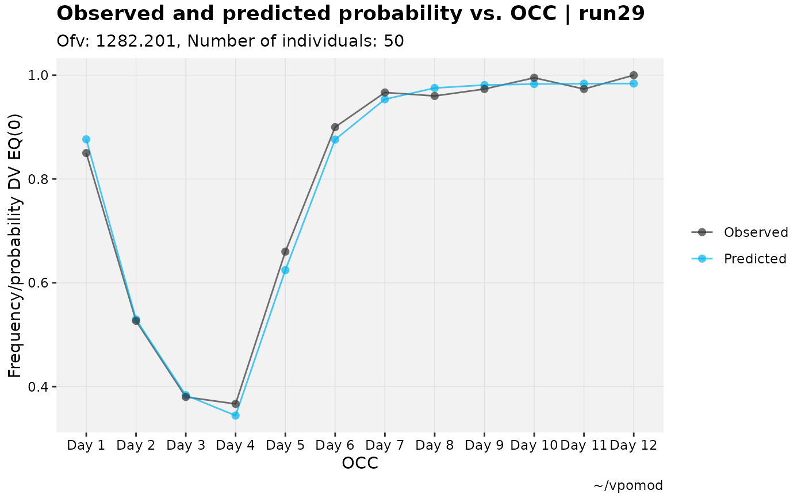
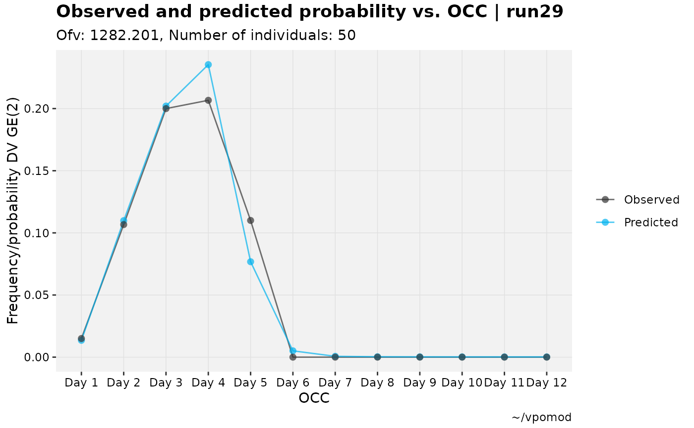

Longitudinal binned observed vs. predicted plot for categorical DVs
Source:R/categorical.R
catdv_vs_occ.RdA longitudinal alternative to catdv_vs_ipred() and to xpose's own
xpose::dv_preds_vs_idv() for categorical outcomes. Rather than binning
by predicted probability (as catdv_vs_ipred() does) or plotting raw
per-subject values against a continuous independent variable, this bins
observations by a discrete, typically ordered grouping variable (eg an
occ-typed occasion column) and plots the observed proportion meeting
the cutpoint condition alongside the mean predicted probability, one
point/line per bin.
Usage
catdv_vs_occ(
xpdb,
mapping = NULL,
bin = NULL,
cutpoint = 1,
type = "pl",
title = "Observed and predicted probability vs. @x | @run",
subtitle = "Ofv: @ofv, Number of individuals: @nind",
caption = "@dir",
tag = NULL,
facets,
.problem,
quiet,
...
)Arguments
- xpdb
<
xp_xtras> or <xpose_data> object- mapping
ggplot2style mapping- bin
<
tidyselect> Column to bin/group by. Defaults to the firstocc-typed column (seeset_var_types()). If that column has defined levels (seeset_var_levels()), those labels (and their order) are used; otherwise raw values are coerced to a factor as-is.- cutpoint
<
numeric> Of defined probabilities, which one to use in plots.- type
String setting the type of plot to be used: point
p, linel, and smooths, or any combination thereof. Seexplot_binned().- title
Plot title
- subtitle
Plot subtitle
- caption
Plot caption
- tag
Plot tag
- facets
Additional facets
- .problem
Problem number
- quiet
Silence extra debugging output
- ...
Any additional aesthetics.
Examples
# Derive an occasion column (TIME is in hours here) and level it in
# visit order
vismo_xpdb <- vismo_pomod %>%
set_var_types(.problem = 1, catdv = DV, dvprobs = matches("^P\\d+$")) %>%
set_dv_probs(.problem = 1, 0~P0, 1~P1, ge(2)~P23) %>%
xpose::mutate(OCC = ceiling((TIME + 1) / 24), .problem = 1) %>%
set_var_types(.problem = 1, occ = OCC) %>%
set_var_levels(.problem = 1, OCC = lvl_inord(paste("Day", 1:12)))
vismo_xpdb %>%
catdv_vs_occ()

vismo_xpdb %>%
catdv_vs_occ(cutpoint = 3)
